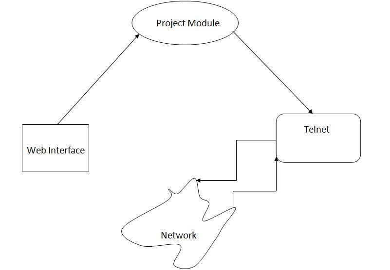
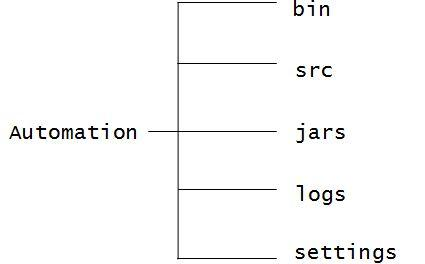
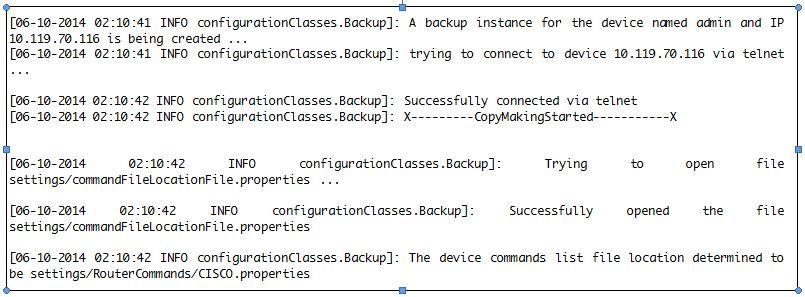
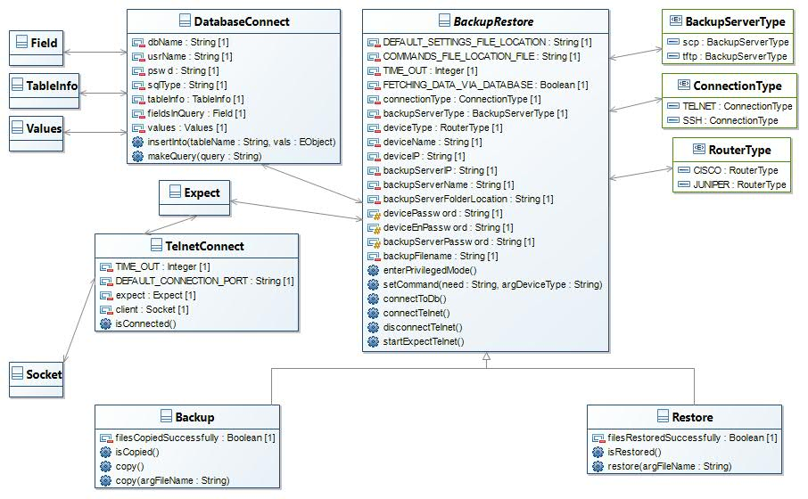

1. Introduction
The module is about automation of copying and restoring of configuration files of devices (routers in most of the cases) connected to the network.The module is the backend for the web interface which allows injecting commands into the telnet terminal through user interface. Generally such kinds of modules or programs are called automation modules. Telnet is a network protocol used on the Internet or local area networks (LAN) to provide a bidirectional interactive text-oriented communication facility using a virtual terminal connection. User data is interspersed in-band with Telnet control information in an 8-bit byte oriented data connection over the Transmission Control Protocol (TCP). In this project very famous Expect tool is used for injecting commands into telnet terminal. Expect is an extension to the Tcl scripting language written by Don Libes, is a program to automate interactions with programs that expose a text terminal interface. Expect was originally written in 1990 for Unix systems, but is now also available for Microsoft Windows and other systems. It is used to automate control of interactive applications such telnet, ftp, passwd, fsck, rlogin, tip, ssh, and others. Expect uses pseudo terminals (Unix) or emulates a console (Windows), starts the target program, and then communicates with it, just as a human would, via the terminal or console interface. The project involves connecting to the required device via telnet client utility using expect library and then executing some commands to make a backup of configuration files of the device on the server.The overall working of the module in this project is as follows:

2. Folder Organization

2.1. bin
2.1.1. Contains folders:
-
configurationClass: Contains two classes Backup.class and BackupRestore.class -
expectForJava: Contains one class Expect.class -
databaseConnect: Contains one class DatabaseConnect.class -
telnetConnect: Contains two class TelnetConnect.class and TestTelnet.class -
testPackage: Contains two classes Test1.class and TelnetClient.class
2.2. src
2.2.1. Contains folders:
-
configurationClass: Contains the source code files for three classes. The files names are Backup.java,BackupRestore.java and Restore.java -
expectForJava: Contains one source code for the class Expect. The file name is Expect.java -
databaseConnect: Contains source code for DatabaseConnect class. -
telnetConnect: Contains two source code files for two class. The file names are TelnetConnect.java and TestTelnet.java -
testPackage: Contains two source code files for two classes. The file names are Test1.java and TelnetClient.java
2.3. jars
Contains four .jar files which are used by the classes in the program. The following are the four .jar files:
-
jsch-0.1.51.jar: Used by the classes BackupRestore and Backup in order to connect via SSH(Secure Shell). -
junit-4.2.jar: Used by the class Expect. Has use in some internal implementation.More information can be found in the documentation of the Expect-for-Java library Github Expect-for-Java. -
log4j-1.2.17.jar: Used for creating log.txt and in internal implementation of Expect-for-Java. -
`org.apache.com.mons.io.jar: Used by the class TelnetClient for parsing the raw bytes sent by the communication socket.
2.4. logs
-
Contains a file log.txt. This file maintains the log of what happens when the code is running. The following is a small look of what log.txt looks like on successful execution of program.

2.5. settings
Contains configuration files. There are three configuration files. There is one folder RouterCommands which contains a file CISCO.properties and two other files are contained in folder settings. The .properties files are:
-
commandFileLocationFile.properties: Contains the file location of the file which contains the list of the commands for the device. -
defaultSettings.properties: Contains the default backup server IP and other details and default settings of the program. It also contains the names of the table in the database and the database username and password. -
CISCO.properties: Contains list of commands for cisco router other Files
2.6. other files
-
log4j.properties: Contains properties for writing log.txt.
3. Organization of Classes

4. BackupRestore Class
Contains properties common to Backup and Restore classes. There is a file "Automation/settings/defaultSettings.properties" with default properties. This can be used to manipulate default host and other default settings.
4.1. Attributes of BackupRestore:
The following are the main attributes.
| Attribute Name | Type | Description |
|---|---|---|
DEFAULT_SETTINGS_FILE_LOCATION |
String |
Contains the location for settings file. Is set to private. The default values is |
DEFAULT_SETTINGS_FILE_LOCATION |
String |
Contains the location for settings file. Is set to private. The default values is |
COMMANDS_FILE_LOCATION_FILE |
String |
Contains the location for files containing the various router commands. Is set to private. The default value is |
TIME_OUT |
int |
Used to set TIME_OUT for the expect tool can be directly changed from |
FETCHING_DATA_VIA_DATABASE |
boolean |
Used to decide the medium of fetching device data. It can be either a text file or data base. If value is set true then the medium is database |
connectionType |
ConnectionType(Enum) |
Used to decide the type of connection telnet or SSH.Can take values SSH or TELNET. |
dbConnect |
DatabaseConnect |
Used for establishing connection to the database. Know more about DatabaseConnect Class |
backupFilename |
String |
Contains the backup filename. By default set to |
log |
Logger |
Used for logging using |
telnetClient |
TelnetConnect |
Used for connecting to the network device via Telnet protocol. |
expect |
Expect |
Used by Expect tool. |
backupServerName |
String |
It contains name of the backup server. |
backupServerIP |
String |
It contains backup servr’s IP address. |
backupServerPassword |
String |
It stores the password for the backup server. |
backupServerFolderLocation |
String |
It stores the folder location on the backup server where the files will be copied. |
backupServerType |
BackupServerType(Enum) |
It stores the type of backup server scp or tftp. |
deviceIP |
String |
It has the IP of the device for which backup is to made. |
deviceName |
String |
Used to store the device user name. |
deviceType |
RouterType(Enum) |
Used to store the device type for which backup is to be made. Its default value is stored in |
devicePassword |
String |
Stores the device password for which backup is to be made. |
deviceEnPassword |
String |
Stores the enable password of the device. |
4.2. Methods of BackupRestore:
The following are main methods:
| Method | Return Type | Parameters | Description |
|---|---|---|---|
repetitiveWork() |
void |
void |
Private function to carry out repetitive work. |
BackupRestore(String ip) |
void |
|
Initializes with the default settings stored in the file defaultSettings.properties. Only device IP is passed to it, rest all the settings are default.Automation/settings/defaultSettings.properties. Default settings can be modified from the above mentioned file.throws |
BackupRestore(String ip,String argUsername,String argPassword,String argEnPassword,String argDeviceType) |
void |
|
Initializes with the default settings stored in the file defaultSettings.properties. Device IP,device user name,device password,device enable password and device type are passed to it, rest all the settings are default. Automation/settings/defaultSettings.properties. Default settings can be modified from the above mentioned file.throws |
getConnectionType() |
ConnectionType |
void |
Returns the connection type TELNET or SSH |
getBackupServerName() |
String |
void |
Returns the name of the backup server(the parameter backupServerName) |
getBackupServerIp() |
String |
void |
Returns the IP of the backup server. |
getBackupServerFolderLocation() |
String |
void |
Used to get the folder location where the copies will be made on the backup server. |
getBackupServerType() |
BackupServerType |
void |
Used to get backup server type. |
getDeviceIp() |
String |
void |
Used to get the IP of the device for which backup is being made. |
getBackupFilename() |
String |
void |
Used to get backup file name. |
getDeviceName() |
String |
void |
Used to get the device user name whose backup is being created. |
getDeviceType() |
RouterType(Enum) |
void |
Used to get the device type. |
setConnectiontype(String argConnectionType) |
void |
|
Used to set the connection type TELNET or SSH. |
setDeviceType(String argDeviceType) |
void |
|
Used to set device type. |
setBackupServerName(String argName) |
void |
|
Sets the parameter backupServerName (i.e. the name of the backup server). |
setBackupServerFolderLocation(String argBackupServerFolderLoaction) |
void |
|
Used to set backup server folder location where files will be saved |
setBackupServerIp(String argIp) |
void |
|
Sets the parameter backupServerIP (i.e the IP of the backup server). |
setBackupServerType(String argBackupServerType) |
void |
|
Used to set backup server type. |
setDeviceIP(String argIp) |
void |
|
Sets the parameter deviceIP (i.e. the IP of the device whose backup is to be made). |
setDevicePassword(String argPassword) |
void |
|
Sets the login password for the device. #NOTE: There is no getter for devicePassword. |
setDeviceEnPassword(String argEnPassword) |
void |
|
Sets the enable password of the device whose backup is to be made. #NOTE: There is no getter for deviceEnPassword. |
setDeviceName(String argDeviceName) |
void |
|
Sets the device user name |
setBackupServerPassword(String argPassword) |
void |
|
Sets backup server password. #NOTE: There is no getter method for backupServerPassword. |
setBackupFilename(String argBackupFilename) |
void |
|
Used to set backup file name. |
connectTelnet() |
void |
void |
Allows connection through telnet. |
disconnectTelnet() |
void |
void |
Disconnects the device through telnet. throws Exception. |
connectSSH() |
void |
void |
Allows connection through SSH to the device whose IP is present in the field deviceIP. throws Exception |
disconnectSSH() |
void |
void |
Disconnects the device which was already connected. #NOTE: Should be called only after connectSSH() is called and the field session gets initialized. |
enterPrivilegedMode() |
void |
void |
Enters into enable mode.Requires connection first . So first function connectSSH() should be called. throws Exception |
setCommand(String need,String argDeviceType) |
String |
|
It opens the database and extracts the commands to perform specific task on the device.Like copy function in CISCO router has command Mnemonics as "COPY". |
startExpectSSH() |
void |
void |
Used for starting the Expect tool when |
startExpectTelnet() |
void |
void |
Used for starting the Expect tool when |
connectToDb() |
void |
void |
Used to connect to database using the instance |
5. Backup Class
This class inherits from the class BackupRestore. As BackupRestore is an abstract class so we can change the implementation of certain functions in Backup class. Although this thing has not been used but can help someone who will be further modifying the module. The attributes of the class Backup is same as protected and public members of BackupRestore as Backup inherits from BackupRestore.
5.1. Attributes of Backup
The main attributes of Backup are:
| Attribute Name | Type | Description |
|---|---|---|
filesCopiedSuccessfully |
boolean |
Shows if files are copied successfully or not. |
5.2. Methods of Backup
The main methods of Backup are:
| Method | Return Type | Parameters | Description |
|---|---|---|---|
repetitiveWork() |
void |
void |
Private function to carry out repetitive work. |
isCopied() |
boolean |
void |
To get the status if files are copied or not. |
Backup(String ip) |
void |
|
Sets the parameters for the device whose backup will be taken. Requires only IP of the device as parameter.Rest all the settings are default. |
Backup(String ip,String username,String password,String enablePassword,String argDeviceType) |
void |
|
Sets the parameters for the device whose backup will be taken. Requires IP,user name,password,enable password and device type of the device. Rest all the settings are default settings. |
copy() |
void |
void |
Used to copy configuration settings for the device. throws Exception. |
copy(String argFileName) |
void |
|
Used to copy configuration settings for the device. It has the version feature to give different file names to different backup files.throws Exception. |
6. Restore Class
This class inherits from the class BackupRestore. As BackupRestore is an abstract class so we can change the implementation of certain functions in Restore class. Although this thing has not been used but can help someone who will be further modifying the module. The attributes of the class Restore is same as protected and public members of BackupRestore as Restore inherits from BackupRestore.
6.1. Attributes of Restore
The main attributes of restore are:
| Attribute Name | Type | Description |
|---|---|---|
filesRestoredSuccessfully |
boolean |
Shows if files are restored successfully or not. |
6.2. Methods of Restore
The main methods of Restore are:
| Method | Return Type | Parameters | Description |
|---|---|---|---|
repetitiveWork() |
void |
void |
Private function to carry out repetitive work. |
isRestored() |
boolean |
void |
To get the status if files are restored or not. |
Restore(String ip) |
void |
|
Sets the parameters for the device whose backup will be taken. Requires only IP of the device as parameter.Rest all the settings are default. |
Restore(String ip,String username,String password,String enablePassword,String argDeviceType) |
void |
|
Sets the parameters for the device whose restore will be taken. Requires IP,user name,password,enable password and device type of the device. Rest all the settings are default settings. |
restore(String argFileName) |
void |
|
Used to restore configuration settings on the device. It needs the restore file name for completing the process of restore. throws Exception. |
7. TelnetConnect Class
This class allows connection via telnet by opening socket and contacting the server via port number 23. Port 23 selected because by default port 23 is reserved for telnet client. But the class has flexibility to change the default port number. This gives freedom to the user to customize the settings according to his/her needs. Apart from that this class also uses expect tool to fill in the telnet terminal and hence complete the process of automatic logging in. The telnetConnect class supports only client socket.
7.1. Attributes of Telnet Connect
The following are the important attributes of TelnetConnect:
| Attribute Name | Type | Description |
|---|---|---|
TIME_OUT |
int |
Used to set TIME_OUT for the expect tool and connection. By default set to 1 second. |
DEFAULT_CONNECTION_PORT |
int |
Default connection port is set to 23.As by default we have 23 as telnet port. |
expect |
Expect |
For using the expect tool to write commands on telnet terminal. |
client |
Socket |
The telnetConnect supports only client socket. |
input |
InputStream |
Sets the input stream for the socket. |
output |
OutputStream |
Sets the output stream for the socket. |
7.2. Methods of Telnet Connect
The following are important methods of the class TelnetConnect:
| Method | Return Type | Parameters | Description |
|---|---|---|---|
startExpect() |
void |
void |
To start the Expect tool. |
TelnetConnect(String ip,String usrName,String pswd) |
void |
|
Opens the default port number 23. Default port can be changed by changing DEFAULT_CONNECTION_PORT. throws Exception. |
startExpect() |
void |
void |
To start the Expect tool. |
TelnetConnect(String ip,String usrName,String pswd) |
void |
|
Opens the default port number 23. Default port can be changed by changing DEFAULT_CONNECTION_PORT. throws Exception. |
TelnetConnect(String ip,int port,String usrName,String pswd) |
void |
|
For connecting via a port other than port 23. |
onScreen() |
String |
void |
To see what’s on terminal screen throws Exception. |
writeOnScreen(String argCommand) |
void |
|
To write on telnet terminal .throws Exception.throws IOException. |
isConnected() |
boolean |
void |
To check if the client is connected. |
getInputStreamForTelnet() |
InputStream |
void |
For returning the input stream. |
getOutputStreamForTelnet() |
OutputStream |
void |
For returning the output stream. |
disconnect() |
void |
void |
For disconnecting the telnet client. |
getExpect() |
Expect |
void |
Returns the expect for the use of other tools. |
8. DatabaseConnect Class
This class is mainly used to connect to the postgres databse using JDBC driver. It has implementation of certain methods which can be used to insert into database, make query and perform other operations on the database. There some other subsidary classes which are used by DatabaseConnect. They are:
-
Field: Has attributes and methods:-
name : String
-
type : String
-
Field(String arg1,int arg2) : constructor which initializes the name of the coloumn and and type of the column.
-
getStringForInt(int arg) : returns the data type of the column which is then stored into type.
-
-
TableInfo: Has attributes and methods:-
tableName : String
-
fields : ArrayList<Field>
-
numOfFields: int
-
getTableName(): returns name of the table.
-
setNumOfFields(int columnCount): sets number of Fields in the table.
-
getNumberOfFields(): returns number of fields in the table.
-
-
Values: Has attributes and methods:-
field: Field
-
object: Object
-
getValue(): returns the object which comes out of the query/execution of SQL statement
-
Value(Object value,Field f) : constructor to initialize the Value.
-
8.1. Attributes of DatabaseConnect:
The important attributes of class DatabaseConnect are:
| Attribute Name | Type | Description |
|---|---|---|
connection |
Connection |
Used to connect to the database. |
stmt |
Statement |
Used to execute SQL queries. |
dbName |
String |
Used to store the database name. |
usrName |
String |
Used to store the user name for connecting to the database. |
pswd |
String |
Used to store the password of the database. |
sqlType |
String |
Used to store the sqlType. In case of the module it is set |
tableInfo |
TableInfo |
Used to save table information. |
fieldsInQuery |
ArrayList<Field> |
Used to store the names of the fields generated in a query. |
values |
ArrayList<Value> |
Used to store the values of fields generated in a query. |
8.2. Methods of DatabaseConnect:
The important methods of class DatabaseConnect are:
| Method | Return Type | Parameters | Description |
|---|---|---|---|
setSQLType(String args) |
void |
|
used to set the SQL type |
setPassword(String args) |
void |
|
used to set the password. |
setDbName(String name) |
void |
|
used to set database name. |
setUsrName(String name) |
void |
|
used to set databas. |
getDbName() |
String |
void |
used to get the database name. |
getUsrname() |
String |
void |
used to return the database users’s name. |
getPswd() |
String |
void |
Returns the password of the database. |
getSQLType() |
String |
void |
returns the sql type. In case of this module it is |
getTableInfo(String arg) |
void |
void |
used to initialize the table. |
insertInto(String tableName,Object… vals) |
void |
|
Used to insert data into the table. |
makeQuery(String query) |
void |
|
Used to execute the given query. |
findValue(String fieldName,Object fieldValue,String resultFieldName) |
String |
|
Is equivalent to |
findData(String fieldName,Object fieldValue) |
String |
|
Is equivalent to |
getRow() |
String |
void |
Used to get row got after the query is executed. |
connectToDataBase(String Type,String Name,String usr,String password) |
void |
|
Used to connect to the database. |
closeConnection() |
void |
void |
Used to close the connection. |